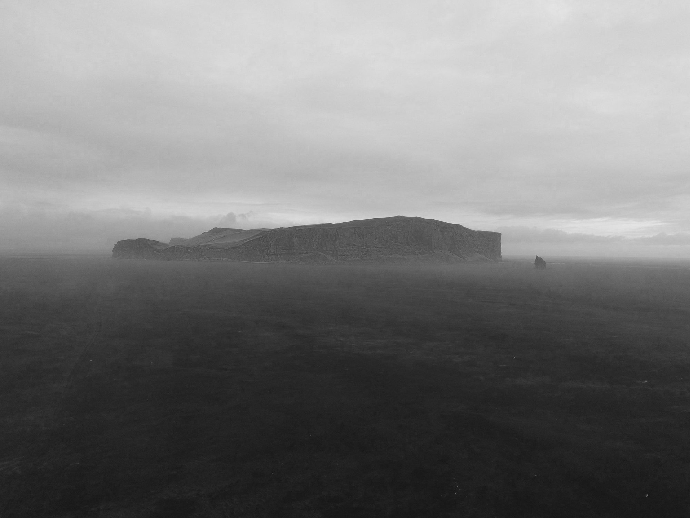
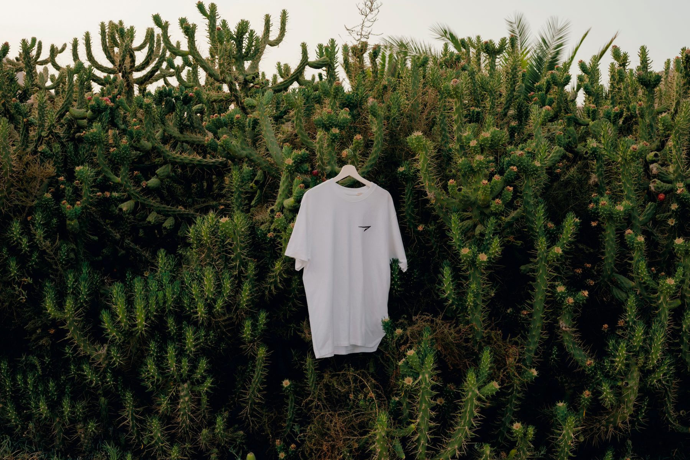

<!doctype html>
<html lang="en">
<head>
<meta charset="utf-8">
<meta name="viewport" content="width=device-width,initial-scale=1">
<title>Vandra | Scandinavian outdoor</title>
<link rel="preconnect" href="https://fonts.googleapis.com">
<link rel="preconnect" href="https://fonts.gstatic.com" crossorigin>
<link href="https://fonts.googleapis.com/css2?family=Inter+Tight:wght@400;500;700&display=swap" rel="stylesheet">
<link rel="stylesheet" href="style.css">
<link rel="icon" href="images/Vandra_logo.png">
</head>
<body class="p-index">
<header class="hdr t-bright-inverse" id="header">
<div class="hdr-d"><a class="hdr-logo" href="index.html" aria-label="Vandra"></a><nav class="hdr-nav"><a href="store.html">Store</a><a href="stories.html">Stories</a><a href="about.html">About</a><a href="contact.html">Contact</a></nav></div>
<div class="hdr-m"><button class="burger" type="button" aria-label="Menu" aria-expanded="false" aria-controls="mmenu"><span class="bun"></span><span class="bun"></span></button><a class="hdr-mlogo" href="index.html" aria-label="Vandra"></a></div>
</header>
<div class="mmenu" id="mmenu" hidden><nav class="mmenu-nav"><a href="store.html">Store</a><a href="stories.html">Stories</a><a href="about.html">About</a><a href="contact.html">Contact</a></nav></div>
<main id="sections">
<section class="sec t-bright-inverse has-bg va-top" style="--mh:66vh;--mhm:66vh;--pt:3vw;--ptm:3vw;--pb:13.2vmax;--pbm:13.2vmax;--spt:76.36px;--sptm:82px" id="s-85d45d"><div class="sec-bg"><div class="sec-ov" style="opacity:0.3"></div></div><div class="cw"><div class="fg" style="--gap:0px;--gapm:0px;--rows:14;--rowsm:20"><div class="fe" style="--d:13/20/15/25;--m:16/2/19/8;--jc:flex-start;--jcm:flex-start;z-index:5"><div class="txt"><p class="sqsrte-small"><strong>Vandra</strong> (Swedish pronunciation: ˈvanˌdra)<br>Means “to hike” or “to wander” in Swedish, reflecting a deep cultural tradition of spending time in nature.</p></div></div></div></div></section>
<section class="sec t-white-bold" style="--mh:66vh;--mhm:66vh;--pt:6.6vmax;--ptm:6.6vmax;--pb:6.6vmax;--pbm:6.6vmax;--spt:0;--sptm:0" id="s-85d461"><div class="cw"><div class="fg" style="--gap:11px;--gapm:11px;--rows:39;--rowsm:93"><div class="fe fe-img" style="--d:1/2/12/10;--m:1/2/12/10;--jc:center;--jcm:center;z-index:1"><div class="imgw" style="border-radius:20px"></div></div><div class="fe" style="--d:13/2/15/10;--m:13/2/14/10;--jc:center;--jcm:center;z-index:2"><div class="txt"><h2><span class="sqsrte-text-color--black">Vandra™ </span><span class="sqsrte-text-color--custom" style="color: #072D65">River</span><span class="sqsrte-text-color--darkAccent"> </span></h2></div></div><div class="fe" style="--d:15/2/17/9;--m:14/2/16/10;--jc:flex-start;--jcm:flex-start;z-index:3"><div class="txt"><p class="sqsrte-small"><span class="sqsrte-text-color--black">Experience the calm of the open sea with Vandra™ River. Its soft blue echoes waves, inspiring peace on coastal walks or daily life. Adjustable fastenings keep baby snug and secure, ensuring comfort for both. Timeless and understated, it's the perfect travel companion.</span></p></div></div><div class="fe" style="--d:17/2/18/6;--m:16/2/17/10;--jc:flex-start;--jcm:center;z-index:5"><div class="txt"><h4><a href="river.html"><span class="sqsrte-text-color--darkAccent">Buy now <strong>→</strong></span></a></h4></div></div><div class="fe fe-img" style="--d:1/10/12/18;--m:19/2/30/10;--jc:center;--jcm:center;z-index:6"><div class="imgw" style="border-radius:20px"></div></div><div class="fe" style="--d:13/10/15/18;--m:31/2/32/10;--jc:center;--jcm:center;z-index:7"><div class="txt"><h2><span class="sqsrte-text-color--black">Vandra™ </span><span class="sqsrte-text-color--custom" style="color: #355632">Forest</span></h2></div></div><div class="fe" style="--d:15/10/17/17;--m:32/2/34/10;--jc:flex-start;--jcm:flex-start;z-index:8"><div class="txt"><p class="sqsrte-small"><span class="sqsrte-text-color--black">Experience forest calm with the Vandra™ Forest. Its deep green shade reflects nature’s healing warmth. Cushioned straps and back ensure comfort on long walks. Scandinavian minimalism fits both nature and daily life, complementing any style.</span></p></div></div><div class="fe" style="--d:17/10/18/14;--m:34/2/35/10;--jc:flex-start;--jcm:center;z-index:6"><div class="txt"><h4><a href="forest.html"><span class="sqsrte-text-color--darkAccent">Buy now <strong>→</strong></span></a></h4></div></div><div class="fe fe-img" style="--d:1/18/12/26;--m:37/2/48/10;--jc:center;--jcm:center;z-index:9"><div class="imgw" style="border-radius:20px"></div></div><div class="fe" style="--d:13/18/15/26;--m:49/2/50/10;--jc:center;--jcm:center;z-index:10"><div class="txt"><h2><span class="sqsrte-text-color--black">Vandra™ </span><span class="sqsrte-text-color--custom" style="color: #BEBFC1">Glacier</span></h2></div></div><div class="fe" style="--d:15/18/17/26;--m:50/2/52/10;--jc:flex-start;--jcm:center;z-index:11"><div class="txt"><p class="sqsrte-small"><span class="sqsrte-text-color--black">Experience the quiet of snowy landscapes with the Vandra™ Glacier. Inspired by Scandinavian winters, its off-white and grey design brings calm and refinement to city strolls or frosty hikes. Designed for balanced weight and ergonomic support, it offers lasting comfort on every adventure.</span></p></div></div><div class="fe" style="--d:17/18/18/26;--m:52/2/53/10;--jc:flex-start;--jcm:center;z-index:7"><div class="txt"><h4><a href="glacier.html"><span class="sqsrte-text-color--darkAccent">Buy now <strong>→</strong></span></a></h4></div></div><div class="fe fe-img" style="--d:20/2/31/10;--m:55/2/66/10;--jc:center;--jcm:center;z-index:1"><div class="imgw" style="border-radius:20px"></div></div><div class="fe" style="--d:32/2/34/10;--m:67/2/68/10;--jc:center;--jcm:center;z-index:2"><div class="txt"><h2><span class="sqsrte-text-color--black">Vandra™ </span><span class="sqsrte-text-color--custom" style="color: #2B2B2B">Mountain</span><span class="sqsrte-text-color--darkAccent"> </span></h2></div></div><div class="fe" style="--d:34/2/36/9;--m:68/2/70/10;--jc:flex-start;--jcm:flex-start;z-index:3"><div class="txt"><p class="sqsrte-small"><span class="sqsrte-text-color--black">Experience the stillness of high alpine evenings with the Vandra™ Mountain. Its deep charcoal tone echoes dark rock at dusk, grounding every walk in quiet confidence. Padded straps and a supportive frame keep both of you comfortable on long climbs. Understated and durable, it moves from mountain trail to city street without a second thought.</span></p></div></div><div class="fe" style="--d:36/2/37/6;--m:70/2/71/10;--jc:flex-start;--jcm:center;z-index:5"><div class="txt"><h4><a href="mountain.html"><span class="sqsrte-text-color--darkAccent">Buy now <strong>→</strong></span></a></h4></div></div><div class="fe fe-img" style="--d:20/10/31/18;--m:73/2/84/10;--jc:center;--jcm:center;z-index:6"><div class="imgw" style="border-radius:20px"></div></div><div class="fe" style="--d:32/10/34/18;--m:85/2/86/10;--jc:center;--jcm:center;z-index:7"><div class="txt"><h2><span class="sqsrte-text-color--black">Vandra™ </span><span class="sqsrte-text-color--custom" style="color: #8C3B2E">Canyon</span></h2></div></div><div class="fe" style="--d:34/10/36/17;--m:86/2/88/10;--jc:flex-start;--jcm:flex-start;z-index:8"><div class="txt"><p class="sqsrte-small"><span class="sqsrte-text-color--black">Experience the warmth of red earth with the Vandra™ Canyon. Its rust-red shade recalls sun-baked desert walls, bringing energy and ease to open-country walks or everyday errands. Breathable fabrics and cushioned straps keep you both cool and comfortable. Bold yet timeless, it brings a little desert light wherever you wander.</span></p></div></div><div class="fe" style="--d:36/10/37/14;--m:88/2/89/10;--jc:flex-start;--jcm:center;z-index:6"><div class="txt"><h4><a href="canyon.html"><span class="sqsrte-text-color--darkAccent">Buy now <strong>→</strong></span></a></h4></div></div></div></div></section>
<section class="sec t-white-bold" style="--mh:1vh;--mhm:1vh;--pt:0.1vmax;--ptm:0.1vmax;--pb:0.1vmax;--pbm:0.1vmax;--spt:0;--sptm:0" id="s-fb8c70"><div class="cw"><div class="fg" style="--gap:0px;--gapm:0px;--rows:23;--rowsm:27"><div class="fe" style="--d:6/3/12/13;--m:3/2/8/10;--jc:flex-start;--jcm:center;z-index:2"><div class="txt"><h2>Whether you’re an avid hiker exploring new trails or simply looking to bring a bit of Nordic calm to your daily life, we invite you to embrace the essence of <span class="sqsrte-text-color--darkAccent">vandra</span> and discover your own path forward.</h2></div></div><div class="fe" style="--d:12/3/15/13;--m:8/2/12/10;--jc:flex-start;--jcm:center;z-index:4"><div class="txt"><p class="sqsrte-small">Born in the heart of Scandinavia, our ethos is shaped by the region’s long-standing traditions of enjoying nature in all its forms—like Norway’s “tura” culture of everyday adventures, Finland’s spirit of overcoming the rugged outdoors, and Sweden’s love for camping and fishing in pristine forests and lakes. These customs have taught us that stepping outside, even for a short wander, can bring clarity, joy, and a sense of connection to the world around us.</p></div></div><div class="fe" style="--d:16/3/18/9;--m:12/2/14/10;--jc:flex-start;--jcm:center;z-index:1"><div class="txt"><p ><a href="about.html"><span class="sqsrte-text-color--darkAccent">Discover more about us <strong>→</strong></span></a></p></div></div><div class="fe fe-img" style="--d:3/15/19/26;--m:15/2/25/10;--jc:center;--jcm:center;z-index:3"><div class="imgw" style="border-radius:20px"></div></div></div></div></section>
<section class="sec t-white-bold" style="--mh:66vh;--mhm:66vh;--pt:6.6vmax;--ptm:6.6vmax;--pb:6.6vmax;--pbm:6.6vmax;--spt:0;--sptm:0" id="s-40a92c"><div class="cw"><div class="fg" style="--gap:11px;--gapm:11px;--rows:12;--rowsm:15"><div class="fe" style="--d:2/2/4/13;--m:2/2/3/10;--jc:center;--jcm:flex-start;z-index:1"><div class="txt"><h2>Frequently asked questions.</h2></div></div><div class="fe" style="--d:4/2/6/12;--m:3/2/5/9;--jc:flex-start;--jcm:flex-start;z-index:3"><div class="txt"><p class="sqsrte-small">Here, you’ll find clear answers to the most common questions about our baby carriers—whether you’re new to our products or simply looking for more details. If you still have questions after reading, feel free to contact our support team.</p></div></div><div class="fe" style="--d:6/2/8/8;--m:5/2/6/10;--jc:flex-start;--jcm:flex-start;z-index:4"><div class="txt"><p ><a href="contact.html">Contact us <strong><em>→</em></strong></a></p></div></div><div class="fe" style="--d:2/15/11/25;--m:7/2/16/10;--jc:flex-start;--jcm:flex-start;z-index:2"><ul class="acc" style="--apad:15px 0px"><li class="acc-item"><h4 class="acc-h"><button class="acc-btn" aria-expanded="false" aria-controls="acc-9256c1-0"><span class="acc-title">Which age group can use these baby carriers?</span><span class="plus" aria-hidden="true"><i class="plus-h"></i><i class="plus-v"></i></span></button></h4><div class="acc-panel" id="acc-9256c1-0" hidden><div class="acc-desc"><p>Our baby carriers are designed for children who can sit upright unassisted, typically around 6 months old. The carrier supports weights from 16 lbs to 40 lbs (7.3 kg to 18.1 kg), depending on your child’s size and activity level.</p></div></div></li><li class="acc-item"><h4 class="acc-h"><button class="acc-btn" aria-expanded="false" aria-controls="acc-9256c1-1"><span class="acc-title">Are the straps easy to adjust?</span><span class="plus" aria-hidden="true"><i class="plus-h"></i><i class="plus-v"></i></span></button></h4><div class="acc-panel" id="acc-9256c1-1" hidden><div class="acc-desc"><p>Yes. Each carrier has multiple points of adjustment, so you can quickly fine-tune the fit for both you and your child. This makes it simple to switch between different wearers.</p></div></div></li><li class="acc-item"><h4 class="acc-h"><button class="acc-btn" aria-expanded="false" aria-controls="acc-9256c1-2"><span class="acc-title">What materials are used?</span><span class="plus" aria-hidden="true"><i class="plus-h"></i><i class="plus-v"></i></span></button></h4><div class="acc-panel" id="acc-9256c1-2" hidden><div class="acc-desc"><p>We use a blend of lightweight, breathable fabrics for the main body, along with sturdy, padded straps for support. This combination helps ensure comfort and durability.</p></div></div></li><li class="acc-item"><h4 class="acc-h"><button class="acc-btn" aria-expanded="false" aria-controls="acc-9256c1-3"><span class="acc-title">How do I clean the baby carrier?</span><span class="plus" aria-hidden="true"><i class="plus-h"></i><i class="plus-v"></i></span></button></h4><div class="acc-panel" id="acc-9256c1-3" hidden><div class="acc-desc"><p>Cleaning is simple — hand-wash the fabric with lukewarm water and pH-neutral soap. For full care instructions, please refer to the Owner’s Manual included with your carrier.</p></div></div></li><li class="acc-item"><h4 class="acc-h"><button class="acc-btn" aria-expanded="false" aria-controls="acc-9256c1-4"><span class="acc-title">Does the design differ for the Glacier, Forest, and River models?</span><span class="plus" aria-hidden="true"><i class="plus-h"></i><i class="plus-v"></i></span></button></h4><div class="acc-panel" id="acc-9256c1-4" hidden><div class="acc-desc"><p>The features are consistent across all five carriers, but each one comes in a unique color scheme—off-white and grey for Glacier, deep green for Forest, soothing blue for River, deep charcoal for Mountain, and rust red for Canyon—so you can pick the style that resonates with you.</p></div></div></li><li class="acc-item"><h4 class="acc-h"><button class="acc-btn" aria-expanded="false" aria-controls="acc-9256c1-5"><span class="acc-title">Do they comply with safety standards?</span><span class="plus" aria-hidden="true"><i class="plus-h"></i><i class="plus-v"></i></span></button></h4><div class="acc-panel" id="acc-9256c1-5" hidden><div class="acc-desc"><p>Yes. The carriers are tested and certified by TÜV to meet ASTM F2549 standards for frame child carriers. All materials and construction methods comply with applicable U.S. safety regulations.</p></div></div></li></ul></div></div></div></section>
<section class="sec t-white" style="--mh:66vh;--mhm:66vh;--pt:6.6vmax;--ptm:6.6vmax;--pb:6.6vmax;--pbm:6.6vmax;--spt:0;--sptm:0" id="s-754d90"><div class="cw"><div class="fg" style="--gap:0px;--gapm:0px;--rows:17;--rowsm:30"><div class="fe" style="--d:6/16/7/26;--m:4/2/5/10;--jc:center;--jcm:flex-start;z-index:2"><div class="txt"><p class="sqsrte-small"><span class="sqsrte-text-color--darkAccent">The Vandra™ Community</span></p></div></div><div class="fe" style="--d:7/16/10/26;--m:5/2/8/9;--jc:center;--jcm:flex-start;z-index:1"><div class="txt"><h2>Join the Vandra™ Community. Share your stories and enjoy great deals and more. </h2></div></div><div class="fe" style="--d:11/16/12/26;--m:9/2/10/10;--jc:center;--jcm:flex-start;z-index:3"><div class="txt"><p ><a href="community.html" target="_blank"><span class="sqsrte-text-color--darkAccent">Sign up now →</span></a></p></div></div><div class="fe fe-img" style="--d:1/2/18/13;--m:11/2/22/10;--jc:center;--jcm:center;z-index:0"><div class="imgw" style="border-radius:20px"></div></div></div></div></section>
<section class="sec t-white sec-list" id="s-5aa705"><div class="tl"><div class="tl-title"><p>Hear what our customers has to say:</p></div><ul class="tl-grid"><li class="tl-item"><h3 class="tl-q">&quot;Took the Glacier out for a 3-day trip through icy valleys in northern Sweden. The padding kept our little one warm the whole time, and the off-white tone actually made us more visible in low light. Easy to clean, easy to trust — exactly what we needed in freezing weather.&quot;</h3><div class="tl-n"><p>Elias R., Kiruna</p></div></li><li class="tl-item"><h3 class="tl-q">&quot;The Forest bag handled rain, mud, and uneven forest trails without fuss. I love how grounded and quiet the design feels — it doesn’t scream ‘baby gear’ but still does the job incredibly well. Bonus points for the snug fit and quiet zippers.&quot;</h3><div class="tl-n"><p>Line M., Oslo</p></div></li><li class="tl-item"><h3 class="tl-q">&quot;Used the River bag on a weekend canoe trip. We got splashed plenty, but everything inside stayed dry. It’s lightweight, structured just enough, and blends beautifully into the scenery. My favorite part? No rustling noises when walking through still places.&quot;</h3><div class="tl-n"><p>Jonas V., Åre</p></div></li></ul></div></section>
<section class="sec t-white-bold" style="--mh:0;--mhm:0;--pt:0.1vmax;--ptm:0.1vmax;--pb:0.1vmax;--pbm:0.1vmax;--spt:0;--sptm:0" id="s-85c9c7"><div class="cw"><div class="fg" style="--gap:0px;--gapm:0px;--rows:13;--rowsm:16"><div class="fe fe-nl" style="--d:4/2/12/12;--m:3/2/5/10;--jc:flex-start;--jcm:flex-start;z-index:6"><div class="nl"><h3 class="nl-title">Newsletter</h3><p class="nl-desc">Sign up with your email address to receive the news and updates.</p><form class="nl-form" action="https://formspree.io/f/xkjjrqvg" method="post" data-form="newsletter"><input type="hidden" name="_subject" value="Vandra website — newsletter signup"><label class="sr" for="nl-4_8896">Email Address</label><input id="nl-4_8896" class="nl-in" type="email" name="email" placeholder="Email Address" required><button class="nl-btn" type="submit">Sign up</button></form></div></div><div class="fe" style="--d:4/19/5/21;--m:5/2/6/6;--jc:flex-start;--jcm:flex-start;z-index:1"><div class="txt"><h3>Help</h3></div></div><div class="fe" style="--d:4/22/5/24;--m:5/6/6/11;--jc:flex-start;--jcm:flex-start;z-index:2"><div class="txt"><h3>Contact</h3></div></div><div class="fe" style="--d:6/22/9/26;--m:7/6/12/10;--jc:flex-start;--jcm:flex-start;z-index:6"><div class="txt"><p class="sqsrte-small">PFS Enterprise LLC<br>30 N Gould St, STE<br>4000, Sheridan, WY 82801, USA<a href="mailto:info@vandrastudios.com" target="_blank">info@vandrastudios.com</a></p></div></div><div class="fe" style="--d:6/19/9/22;--m:7/2/10/6;--jc:flex-start;--jcm:flex-start;z-index:5"><div class="txt"><p class="sqsrte-small"><a href="terms.html" target="">Terms &amp; Conditions</a><br><a href="shipping.html">Shipping and Return</a><br><a href="privacy.html">Privacy Policy</a><br><a href="registration.html">Product registration</a></p></div></div><div class="fe" style="--d:12/11/13/17;--m:16/4/17/8;--jc:flex-end;--jcm:flex-start;z-index:0"><div class="txt"><p class="sqsrte-small tc"><strong>Vandra™ </strong>2025 | All rights reserved</p></div></div></div></div></section>
</main>
<script src="main.js"></script>
</body>
</html>
